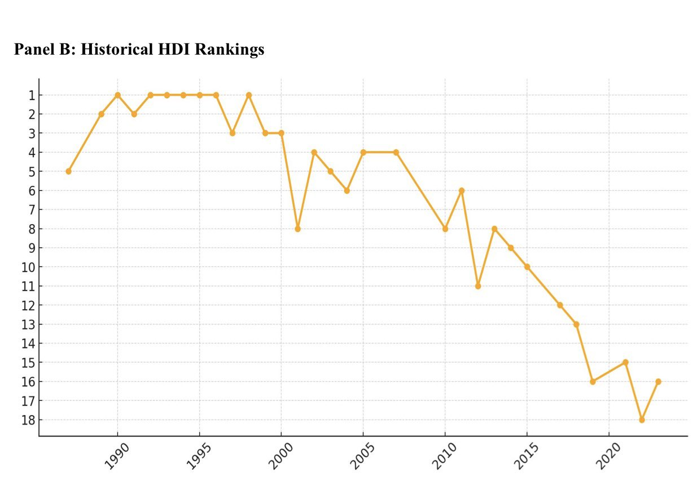
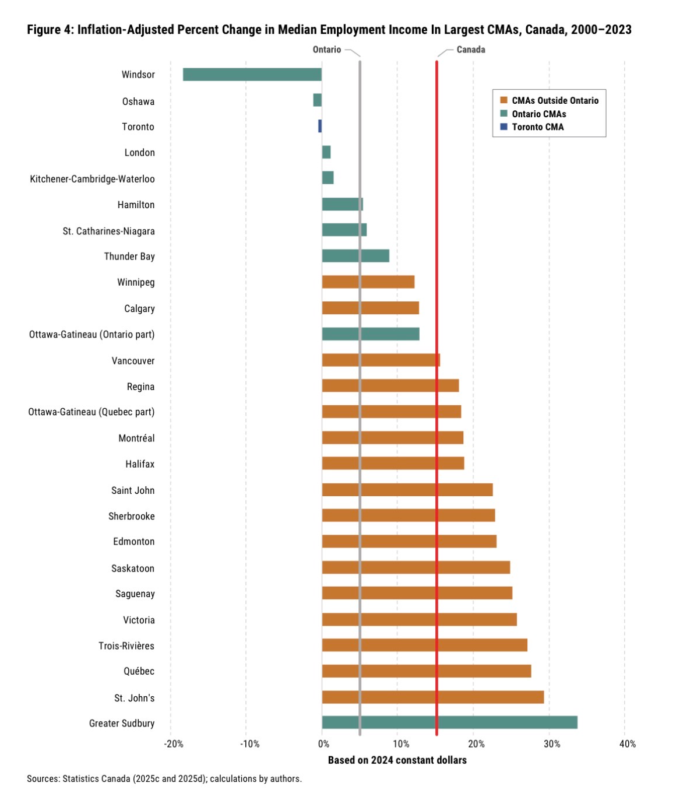
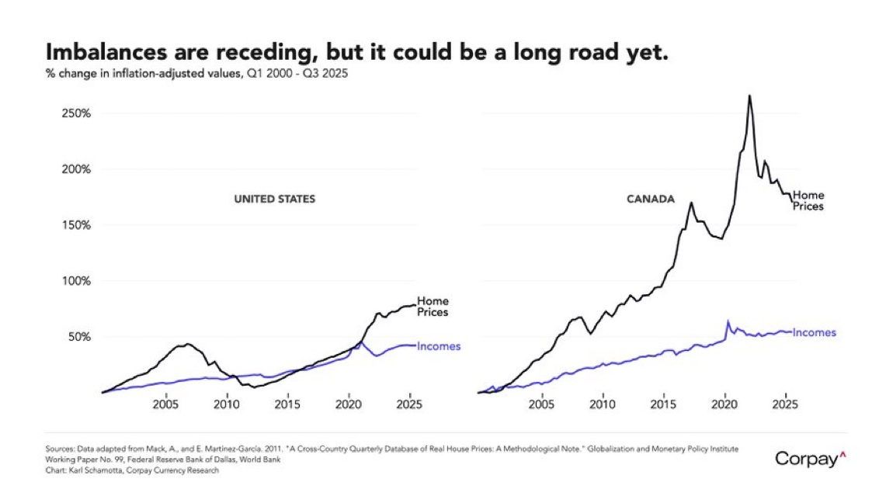
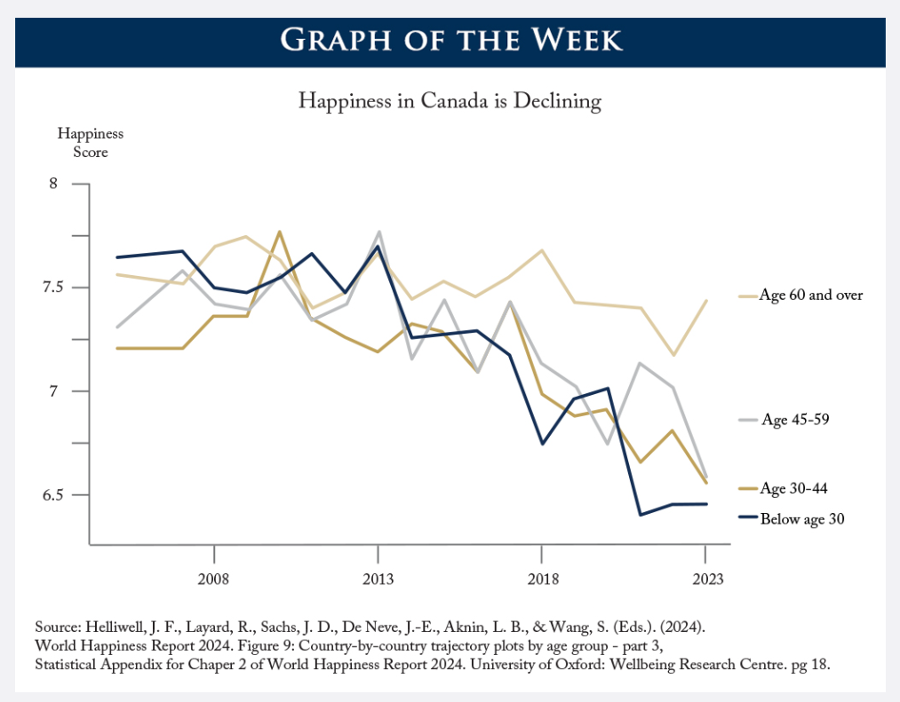

The Globe and Mail headline above sparked a huge reaction (including my own) after observing that our economic activity per Canadian has fallen behind a state often associated with its poverty. Some people say it is evidence of real economic decline. Others dismissed it as alarmist, arguing that GDP per capita is a narrow and misleading measure of living standards.
The critics of GDP per capita are not wrong to raise some objections. GDP does not measure inequality or life expectancy. It does not capture environmental sustainability. It does not tell you whether people feel secure, optimistic, or socially connected. Comparing two jurisdictions in a single year can be distorted by exchange rates, industry mix, or temporary shocks.
That is why many commentators pointed to broader indicators instead — the Human Development Index, median income data, and global happiness rankings. The argument was that even if GDP per capita looks weak, those other measures provide a fuller picture.
But here is the uncomfortable truth: those indicators may actually be even worse.
Canada has fallen from near the top of global Human Development Index rankings into the low teens:

Real income growth in many Ontario communities has been weak or negative for over two decades:

Housing prices have risen dramatically faster than incomes, even when accounting for the recent correction in prices:

Global happiness data shows a noticeable decline in Canadian life satisfaction since 2015, particularly among young people:

So this is not a case where GDP per capita looks troubling but everything else looks strong. Across multiple measures — income growth, affordability, development rankings, reported well-being — something has clearly gone wrong.
What matters most with GDP per capita is the growth rate, not just the absolute level. Over time, the rate of per-person growth tells you a great deal about what is actually happening inside an economy — whether productivity is rising, whether opportunity is expanding, and whether the fiscal base is strengthening. The opportunity cost of weak growth compounds quietly over decades.
To avoid cherry-picking, I looked at GDP per capita in constant, purchasing-power-adjusted dollars. The table below combines publicly available data from the World Bank for national economies with Ontario growth data derived from Statistics Canada, expressed on a comparable basis. These are rounded estimates, so different data sources may come up with slightly different numbers, but the trend is what matters most.
Here is what real per-person growth looks like from 2000 to 2023, indexed to 2021 prices:
In 2000, Ontario was slightly above the Canadian average. We were more competitive and prosperous than some of the richest (and formerly peer) economies today.
But we are no longer, because our per-person growth barely compounded. If Ontario had grown like Denmark or the Netherlands since 2000, our per-person economy today would be roughly $20,000 larger. Across roughly 15 million people, that represents more than $300 billion in additional annual economic output.
At a combined federal–provincial tax wedge of roughly 30 percent, that translates into about $6,000 per person in additional public revenue every year, without raising tax rates. For context, the combined federal and provincial deficit today is roughly $1,800 per person. That means we would have $4,200 a year that could go to better social services, building infrastructure, or lowering taxes without taking on any new public debt. That’s a lot of capacity to solve many of the problems we face today.
So when experts say healthcare is underfunded, they’re right. When parents say we need more teachers to lower class sizes, they’re right. And when families and businesses say they can’t afford to pay more in taxes, they’re right too. Those pressures are not contradictions — they’re what happens when per-person growth is too weak to expand the tax base fast enough to support rising costs and expectations. Without stronger growth, governments feel broke, services feel strained, and taxpayers feel squeezed, all at the same time.
GDP per capita does not capture everything that matters. But persistent weakness in its growth rate usually signals deeper structural problems. And it’s exactly those structural problems I am exploring a run for office to fix. More on that soon.